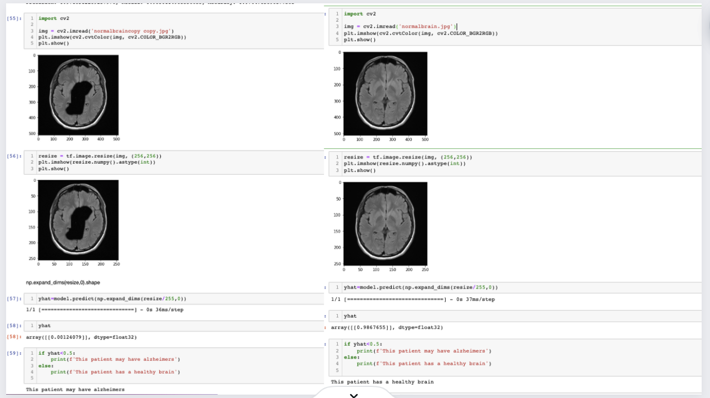

Alzheimer's Classification using MRI Scans: Neural Network Image Classification - Project Summary
In this project, our goal was to develop a neural network image classifier for Alzheimer's disease using MRI scans. We explored two approaches: one utilizing ResNet 101 and another involving a custom-built convolutional neural network (CNN).
Dataset Overview:
We obtained a dataset from Kaggle containing 6,400 MRI scans categorized as non-demented, very mild demented, mild demented, and moderately demented. The imbalanced distribution, especially with a higher number of non-demented scans, posed challenges to our model's accuracy.
First Approach - ResNet 101:
For our initial approach, we implemented a ResNet 101 model using TensorFlow and Keras, aiming to benefit from its advanced capabilities. Despite achieving an accuracy of 63%, concerns about model robustness and the impact of skewed data led us to explore alternative solutions.
Upon discovering an augmented dataset addressing the skewness issue, we achieved an 83% accuracy. However, due to the lack of transparency in the augmentation process, these results were not considered conclusive.
Second Approach - Custom CNN:
In our second approach, we developed a custom CNN with eight layers, achieving a remarkable accuracy of approximately 97.25%. This model classified scans into binary categories: non-demented and demented, based on the assumption that early Alzheimer's scans may appear normal.
Model Evaluation and Insights:
We scrutinized our CNN model's performance by testing edited images simulating Alzheimer's effects. While the model accurately identified normal and edited demented brains, it showed limitations in recognizing the reverse edit, emphasizing potential feature complexities.

Next Steps:
With improved CNN accuracy, future steps involve integrating ResNet 101 functionalities into our CNN model for enhanced performance. Reimplementing multiclass classification and assessing nuanced distinctions are priorities, along with exploring methods like one-hot encoding for broader categorization.
In summary, our project demonstrates promising strides in Alzheimer's classification using neural networks, with ongoing efforts to refine and optimize our models.